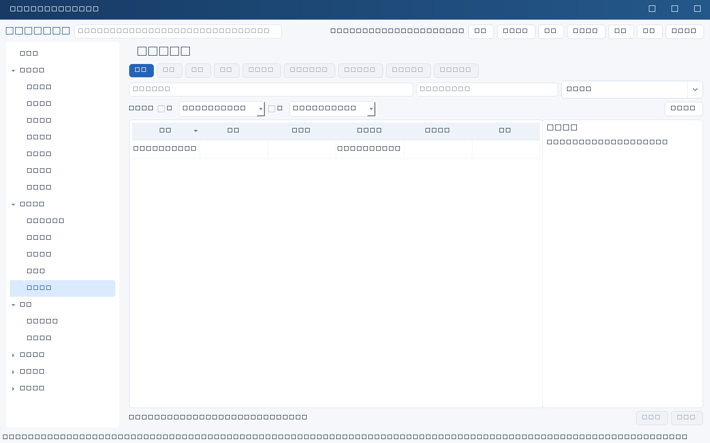
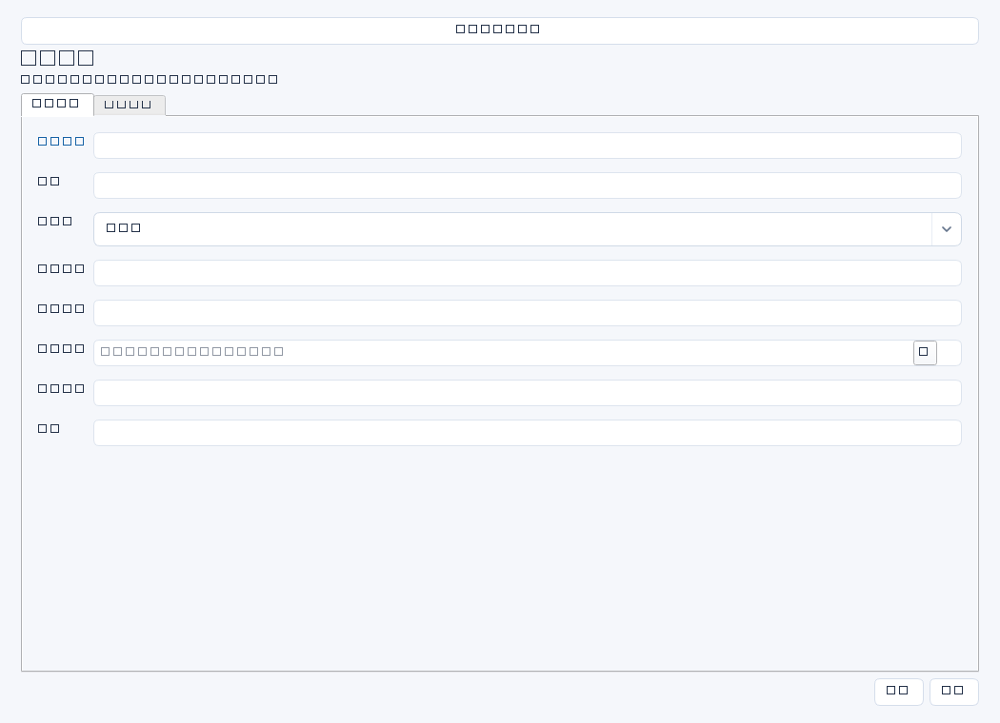

管理接手IT工作、审计准备、规划调研中的资料索取、核验和缺口。强调资料从谁取得、是否可信、缺什么以及何时补齐，而不只是文件清单。


操作步骤与资料获取
- 根据管理目标列资料需求：系统架构、资产清单、账号权限、合同SLA、备份策略和费用台账；每项指定提供人及期望版本。
- 新增收集项，注明收集方式和截止日期；先取得系统管理员导出、业务确认或合同原件，不仅接受口头“已完成”。
- 登记支撑文件位置并检查日期、范围、完整性；抽样与系统实际配置或财务原账核对，在证据中留核验过程。
- 将缺失字段、过期数据和相互矛盾内容写进缺口，明确下一步补采或访谈安排；核实后人工更新核验状态。
字段逐项说明
| 操作 / 字段 | 详细说明 |
|---|---|
| 名称 | 资料需求标题，强制非空；建议“ERP管理员权限清单核验”。 |
| 类别 | 资料主题，如系统、资产、权限、合同或备份；自由文本，建议统一分类口径。 |
| 收集内容 | 说明所需字段、覆盖范围、截止时点和格式，例如全部管理员账号、权限、责任人与最近使用时间。 |
| 提供人 | 能提供或确认资料的人名；可选人员或手填，不触发自动催收。 |
| 收集方式 | 说明系统导出、现场核查、访谈、邮件或会议确认，并记录获取时间及限制。 |
| 支撑文件 | 原始资料文件名、版本及受控存放位置；文本字段，不是上传控件。 |
| 截止日期 | 约定取得并核验资料的日期；非空时强制YYYY-MM-DD。 |
| 核验状态 | 自由文本，可约定未取得、待核验、部分核验、已核验；不是固定枚举或自动审核结果。 |
| 证据 | 留抽样核对记录、提供人确认纪要及核验日期，说明为何认为资料可信。 |
| 缺口 | 列尚缺范围、字段、时点或矛盾项，标出影响；没有缺口时建议写核验范围内未发现。 |
| 下一步 | 写补采内容、负责联系人和期限；必要时另建任务，不会自动转任务。 |


示例（仅演示）
| 操作 / 字段 | 详细说明 |
|---|---|
| 名称 | ERP管理员权限清单核验 |
| 类别 | 权限 |
| 收集内容 | 生产ERP全部高权限账号、角色、责任人、审批依据及MFA状态，时点2026-04-01 |
| 提供人 | 陈晨 |
| 收集方式 | 由管理员现场导出并邮件确认范围 |
| 支撑文件 | ERP权限导出20260401.csv；受控资料库/权限复核/202604 |
| 截止日期 | 2026-04-08 |
| 核验状态 | 部分核验 |
| 证据 | 已与角色配置抽核5个账号，核验纪要AC-0403 |
| 缺口 | 2个接口账号缺少责任人和审批依据 |
| 下一步 | 4月8日前请应用负责人确认接口归属 |
形成闭环
- 确认资料覆盖约定范围、时点和版本，再写已核验；只取得文件不能等同核验通过。
- 将核实后的信息人工登记到系统、资产或权限等相应台账；本模块不会自动拆解资料。
- 保留缺口补齐前后版本与确认材料，避免用覆盖文件掩盖差异。
常见误区与边界
- 支撑文件有路径却无访问权限，后续无法核对。
- 把自述资料当系统事实，未抽样核验。
- 认为填写截止日期会自动提醒提供人或自动催收。